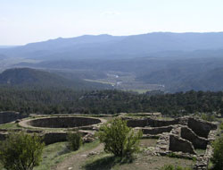

|
CHIMNEY ROCK
-- ARCHAEOLOGICAL AREA --
Welcome To Chimney Rock!
 Chimney Rock is a San Juan National Forest Archaeological Area located in Colorado between Durango and Pagosa Springs and managed for archaeological protection, public interpretation, and education. Its care, protection, and preservation are shared by the Pagosa Ranger District, USDA Forest Service and the public, who contribute through tour fees, donations, and purchase of items from the Chimney Rock Visitor's Center. The Chimney Rock Interpretive Program, managed and staffed by the National Forest Service and volunteers of the Chimney Rock Interpretive Association, conducts daily guided walking tours and operates the Visitor Center during in-season, May 15 to September 30.
Designated an Archaeological Area and National Historic Site in 1970, Chimney Rock lies on 4,100 acres of San Juan National Forest land surrounded by the Southern Ute Indian Reservation. The site was home to the ancestors of the modern Pueblo Indians 1,000 years ago and is of great spiritual significance to these tribes. Their ancestors built over 200 homes and ceremonial buildings high above the valley floor, probably to be near the sacred twin rock pinnacles. Of the hundreds of individual sites dotting the landscape, researchers have thus far found 91 structures that may have been permanent structures, plus 27 work camps near farming areas, adding up to more than 200 individual rooms. Since the 1960's, Dr. Frank Eddy of the University of Colorado and others have studied the site, and research continues.
|
New Chimney Rock Book!
Visions of Chimney Rock: A Photographic Interpretation of the Place and Its People, edited by Helen L. Richardson
|
|
|
On this website you may explore Chimney Rock, check out the 2007 calendar and special events, and learn about Major Lunar Standstill, volunteering, and Friends of Chimney Rock.
|
This website is maintained by the Chimney Rock Interpretive Association, Inc.
|
Hours of Operation: In-Season May 15 - September 30, Daily 9:00 a.m. - 4:30 p.m.
Guided Walking Tour Schedule: 9:30 a.m., 10:30 a.m., 1:00 p.m., 2:00 p.m.
Location: 3 miles South of Hwy 160 on Hwy 151 (map)
Mailing Address: Chimney Rock Interpretive Program, P.O. Box 1662, Pagosa Springs, CO 81147
Phone: (970)883-5359 Visitor's Cabin In-season, (970)264-2287 Leave Message Off-season
E-mail: chimneyrock@chimneyrockco.org
Download Chimney Rock Brochure
|
|
|
|
Last Updated: 07/15/2023
|
|
|